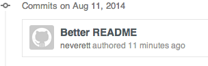
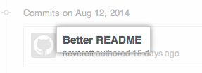
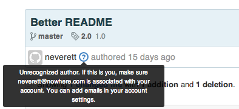

GitHub uses the email address in the commit header to link the commit to a GitHub user. If your commits are being linked to another user, or not linked to a user at all, you may need to change your local Git configuration settings, add an email address to your account email settings, or do both.
Note: If your commits are linked to another user, that does not mean the user can access your repository. A user can only access a repository you own if you add them as a collaborator or invite them to join a team that has access to the repository.
Commits are linked to another user
If your commits are linked to another user, that means the user has added the email address in your local Git configuration settings to their GitHub account. In this case, you can change the email in your local Git configuration settings and add the new email address to your GitHub account to link future commits to your account.
- To change the email address in your local Git configuration, follow the steps in "Setting your email in Git". If you work on multiple machines, you will need to change this setting on each one.
- Add the email address from step 2 to your account settings by following the steps in "Adding an email address to your GitHub account".
Commits you make from this point forward will be linked to your account.
Commits are not linked to any user
If your commits are not linked to any user, we will display the grey Octocat logo beside them:

To check the email address used for those commits and connect commits to your account, take the following steps:
- Navigate to the commit by clicking the commit message link. 
- To read a message about why the commit is not linked, hover over the blue to the right of the username. 
- Unrecognized author (with email address) If you see this message with an email address, it means the address has not been added to your account settings. To link your commits, add the email address to your GitHub email settings.
- Unrecognized author (no email address) If you see this message without an email address, it means you used a generic email address that can't be added to your email settings. You will need to change the email address in your local Git configuration settings, then add the new address to your GitHub email settings to link your future commits. Old commits will not be linked.
- Invalid email This means the email address in your local Git configuration settings is either blank or not formatted as an email address. You will need to change the email address in your local Git configuration settings, then add the new address to your GitHub email settings to link your future commits. Old commits will not be linked.
If your local Git configuration contained a generic email address, or an email address that was already attached to another user's account, then your previous commits will not be linked to your account. While Git does allow you to change the email address used for previous commits, we strongly discourage this, especially in a shared repository. See "Changing author info" for more information.